

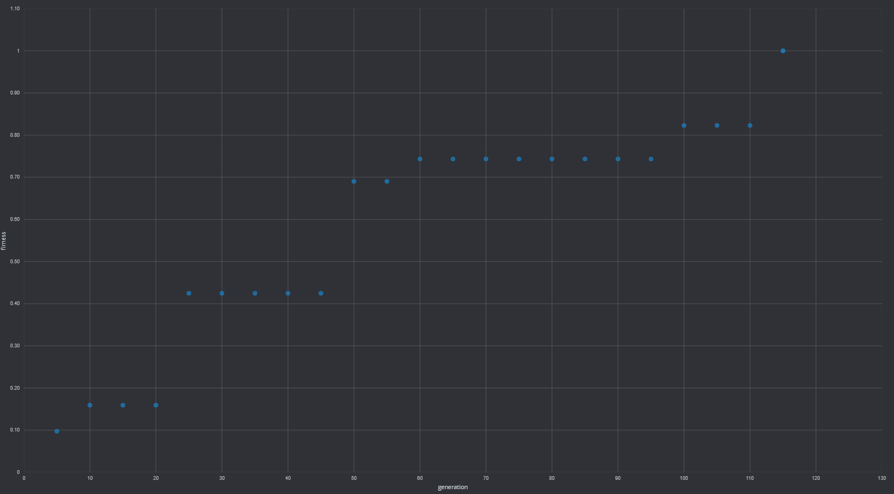

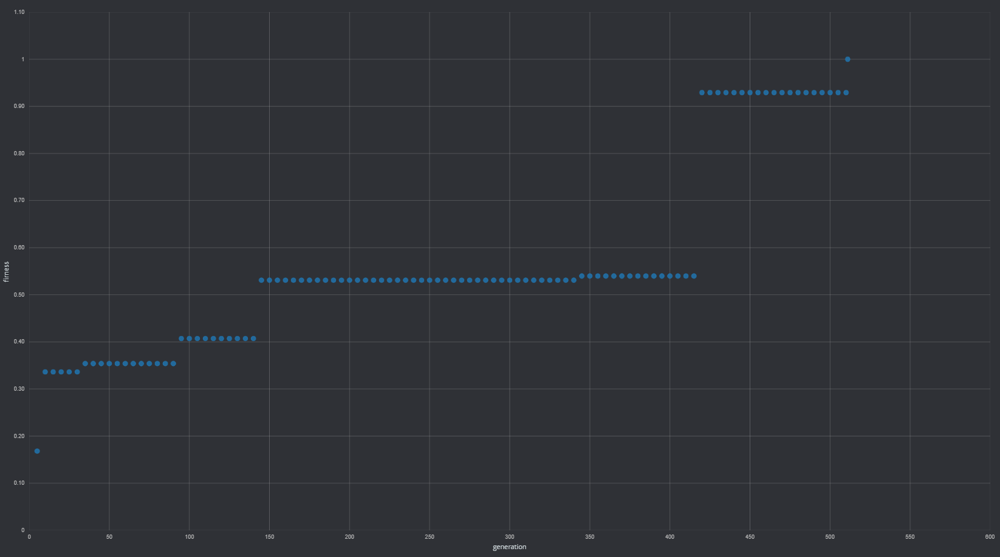

Geometry Dash is platformer game that I really like, but I suck at it, so I will try to create AI to play it for me. At first, I created simple geometry dash clone and following map.
You can stand on black tiles, red tiles kill. Simple. To create AI I used NEAT algorithm using sharpneat library. Neural network as input takes 7x7 tiles in front of player(picture below) and output is only one, jump or not.
So, network needs 49 input neuron for each tile type(black and red for now) and neural network on start looks like this(I know, nothing impressive)

It’s time to train network. Training took couple of seconds on quad-core Xeon. After 115 generations with 150 specimens in each looks like that(still nothing amazing):

And AI can complete level:
Training progress(fitness is percent of level completeness):

If network performs so great let introduce another tile. Green tile - It’s possible to jump on it but it’s not to stand on it. I created another simple map using new tile:
Let see how AI can handle new tile type. This time training took a bit longer. AI required 511 generations. What’s interesting, network is even simpler than previously.

Training progress:

If you want to see how everything is implemented or even add something from yourself source code and binaries are available in the DashAI repository
Program usage:
Usage: DashAI [OPTIONS]
OPTIONS:
--train -t (default : false) Train network
--play -p (default : false) Let network play game
--map -m (default : Map.bmp) Path to map
--output -o (default : output/foobar) Output directory
--help -h (default : false) Shows this infoHow to create own map:
When creating own map squares colors must be exactly for - Black(ground) - #000000 - Red(kill) - #ff0000 - Green(jump in air) - #00ff00
Note that every other color will be interpreted as air(empty). For creating map I used paint.net but any other graphics program should handle it. Save map as bmp file.